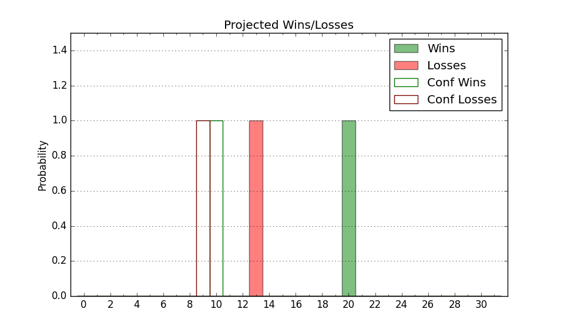

| Home | Game Probabilities | Conferences | Preseason Predictions | Odds Charts | NCAA Tournament |
| City: | Columbia, Missouri | |
| Conference: | SEC (4th)
| |
| Record: | 11-7 (Conf) 25-10 (Overall) | |
| Ratings: | Comp.: 15.4 (51st) Net: 15.4 (51st) Off: 117.7 (9th) Def: 102.3 (156th) SoR: 85.2 (22nd) |
| Remaining | ||||||
|---|---|---|---|---|---|---|
| Date | Opponent | Win Prob | Pred. | |||
| Previous | Game Score | |||||
| Date | Opponent | Win Prob | Result | Off | Def | Net |
| 11/7 | Southern Indiana (264) | 95.4% | W 97-91 | -9.7 | -12.0 | -21.7 |
| 11/11 | Penn (131) | 85.5% | W 92-85 | 8.9 | -16.2 | -7.3 |
| 11/13 | Lindenwood (332) | 97.7% | W 82-53 | -16.3 | 18.5 | 2.2 |
| 11/15 | SIU Edwardsville (222) | 92.9% | W 105-80 | 9.9 | -6.3 | 3.6 |
| 11/20 | Mississippi Valley St. (356) | 98.7% | W 83-62 | -14.3 | 3.8 | -10.5 |
| 11/23 | Coastal Carolina (314) | 97.1% | W 89-51 | -15.1 | 34.6 | 19.5 |
| 11/26 | Houston Baptist (357) | 98.8% | W 105-69 | 4.8 | -0.0 | 4.7 |
| 11/29 | @Wichita St. (100) | 54.2% | W 88-84 | -1.0 | 5.4 | 4.4 |
| 12/4 | Southeast Missouri St. (257) | 94.9% | W 96-89 | -0.6 | -16.4 | -17.0 |
| 12/10 | Kansas (10) | 41.1% | L 67-95 | -22.1 | -14.6 | -36.7 |
| 12/17 | (N) UCF (54) | 52.2% | W 68-66 | 0.2 | 0.2 | 0.4 |
| 12/22 | (N) Illinois (29) | 40.9% | W 93-71 | 28.9 | 5.9 | 34.8 |
| 12/28 | Kentucky (28) | 55.7% | W 89-75 | 12.8 | 0.4 | 13.2 |
| 1/4 | @Arkansas (16) | 22.8% | L 68-74 | 4.1 | 3.9 | 7.9 |
| 1/7 | Vanderbilt (81) | 73.1% | W 85-82 | 1.2 | -4.4 | -3.2 |
| 1/11 | @Texas A&M (33) | 28.5% | L 64-82 | -17.9 | -6.4 | -24.3 |
| 1/14 | @Florida (59) | 38.1% | L 64-73 | -16.2 | 5.3 | -10.9 |
| 1/18 | Arkansas (16) | 50.2% | W 79-76 | 3.9 | 1.5 | 5.4 |
| 1/21 | Alabama (2) | 26.9% | L 64-85 | -18.9 | 7.8 | -11.1 |
| 1/24 | @Mississippi (111) | 57.1% | W 89-77 | 21.6 | -0.1 | 21.5 |
| 1/28 | Iowa St. (25) | 55.2% | W 78-61 | 15.8 | 9.1 | 24.9 |
| 2/1 | LSU (152) | 88.1% | W 87-77 | 5.1 | -6.0 | -0.9 |
| 2/4 | @Mississippi St. (57) | 37.6% | L 52-63 | -22.8 | 6.4 | -16.4 |
| 2/7 | South Carolina (235) | 93.9% | W 83-74 | 11.4 | -22.5 | -11.1 |
| 2/11 | @Tennessee (4) | 11.2% | W 86-85 | 39.0 | -20.6 | 18.4 |
| 2/14 | @Auburn (40) | 30.6% | L 56-89 | -29.2 | -7.3 | -36.5 |
| 2/18 | Texas A&M (33) | 57.5% | L 60-69 | -14.4 | 0.7 | -13.7 |
| 2/21 | Mississippi St. (57) | 67.3% | W 66-64 | -9.5 | 7.3 | -2.2 |
| 2/25 | @Georgia (172) | 71.3% | W 85-63 | 17.7 | 5.1 | 22.9 |
| 3/1 | @LSU (152) | 68.4% | W 81-76 | 7.2 | -12.9 | -5.8 |
| 3/4 | Mississippi (111) | 81.9% | W 82-77 | 5.0 | -9.3 | -4.3 |
| 3/10 | (N) Tennessee (4) | 18.8% | W 79-71 | 15.8 | 6.6 | 22.4 |
| 3/11 | (N) Alabama (2) | 16.6% | L 61-72 | -11.7 | 13.9 | 2.3 |
| 3/16 | (N) Utah St. (18) | 36.7% | W 76-65 | 1.7 | 20.9 | 22.6 |
| 3/18 | (N) Princeton (94) | 67.2% | L 63-78 | -14.1 | -17.9 | -32.0 |
| Stats & Trends | |||||
|---|---|---|---|---|---|
| Current | Day | Week | Month | Season | |
| Composite | 15.4 | -0.0 | -0.3 | +0.9 | -0.4 |
| Comp Rank | 51 | -- | -1 | +4 | -9 |
| Net Efficiency | 15.4 | -0.0 | -0.3 | +0.9 | -- |
| Net Rank | 51 | -- | -1 | +5 | -- |
| Off Efficiency | 117.7 | -0.0 | -0.3 | +0.0 | -- |
| Off Rank | 9 | -- | -1 | -- | -- |
| Def Efficiency | 102.3 | -0.0 | +0.0 | +0.8 | -- |
| Def Rank | 156 | -1 | -2 | +29 | -- |
| SoS Rank | 65 | -- | +4 | +12 | -- |
| Exp. Wins | 25.0 | -- | +1.0 | +2.7 | +5.6 |
| Exp. Conf Wins | 11.0 | -- | -- | +0.7 | +1.8 |
| Conf Champ Prob | 0.0 | -- | -- | -- | -4.9 |

| Advanced Stats | ||
|---|---|---|
| Stat | Value | Rank |
| Off Eff FG % | 0.584 | 6 |
| Off Ast Ratio | 0.183 | 15 |
| Off ORB% | 0.272 | 175 |
| Off TO Rate | 0.131 | 24 |
| Off FT Ratio | 0.294 | 249 |
| Def Eff FG % | 0.514 | 204 |
| Def Ast Ratio | 0.143 | 193 |
| Def ORB% | 0.308 | 299 |
| Def TO Rate | 0.206 | 5 |
| Def FT Ratio | 0.311 | 178 |